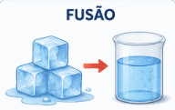
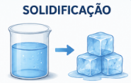
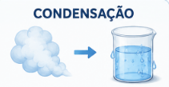
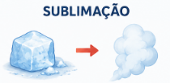

Transformações
As transformações físicas acontecem quando uma substância muda de estado devido ao ganho ou perda de calor.

Fusão
A fusão é a passagem do estado sólido para o estado líquido. Esse processo acontece quando a substância recebe calor. Um exemplo é o gelo derretendo e se transformando em água.

Solidificação
A solidificação é a passagem do estado líquido para o sólido. Ela ocorre quando há perda de calor. Um exemplo é a água congelando e formando gelo.
Vaporização
A vaporização é a passagem do estado líquido para o gasoso. Ela ocorre quando o líquido recebe calor suficiente para se transformar em vapor.

Condensação
A condensação é a passagem do estado gasoso para o líquido. Ela ocorre quando o gás perde calor. Um exemplo são as gotículas que se formam na parte externa de um copo gelado.

Sublimação
A sublimação é a passagem direta do estado sólido para o gasoso, ou do gasoso para o sólido, sem passar pelo estado líquido.